Artist
Sheyma Khashkhashi
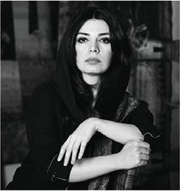
- Born1978
- FromBroujerd, Iran
- Works11
- Dated2015
StatementAbout the work
The old dream
The old dream is the never-ending story of nightmares and fantasies. It is an imaginary picture of drowned castles alluding to mysteries of dark ancient past as well as sparks of brightness and hope. It hints at what has turned into obsolete and dark in the depth of our mindset and what will be bright and promising in the future. This is an account of transformation from freezing to natural life and the female struggle for survival. Beyond their appearance, the works of this series speak of contrasting forces in their deepest layers. They embody male and female symbols and point to drive and immobility, rise and fall, heat and cold, colorful and colorless, and so on.
The series also look into the contradictions between beauty and seduction and between enchantment and poisonous fatality attributed to inner and outer side of the female character which is epitomized by jellyfish. It refers to a strangled life outside the drowned castle and the determination to liberate from sunken being.
The story has neither certainty nor end, but offers a revelation to provoke floating imagination of the viewer.
Sheyma Khashkhashi
Works11 artworks


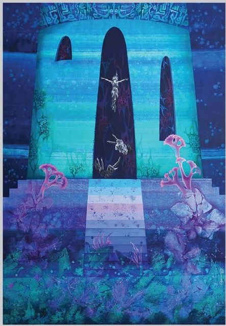

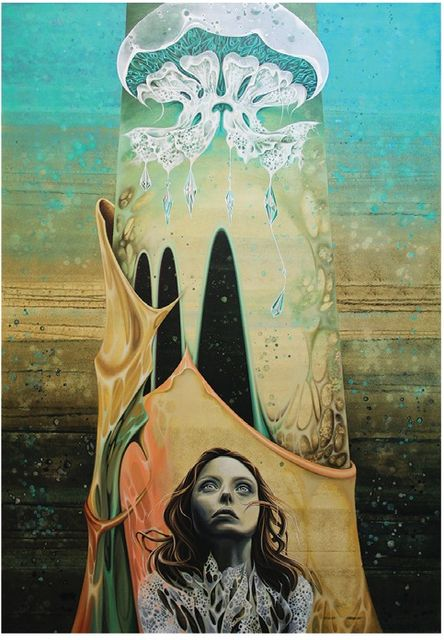

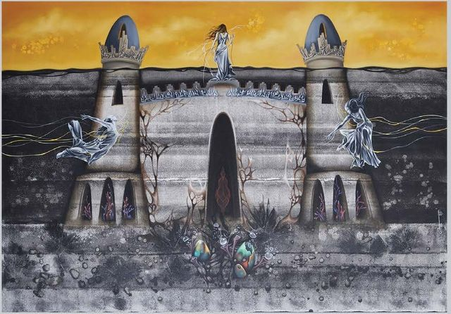

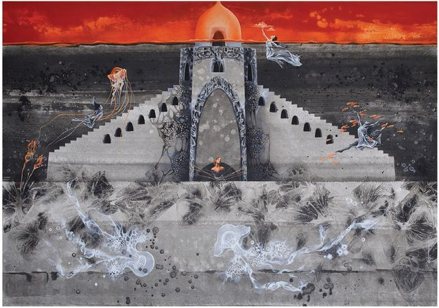

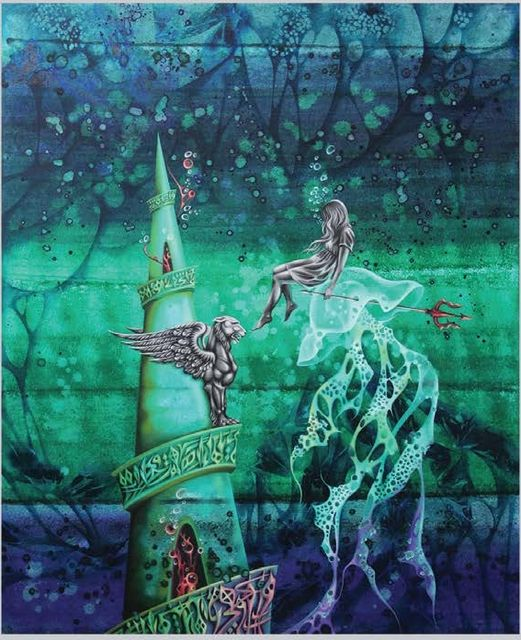

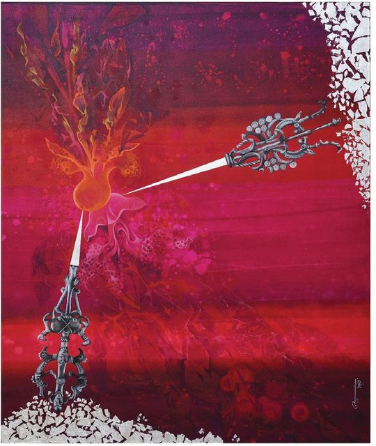

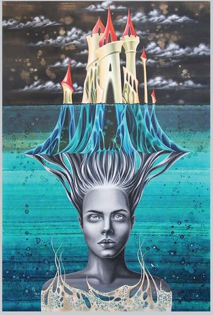

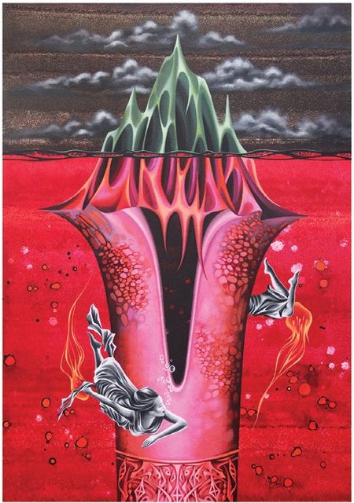

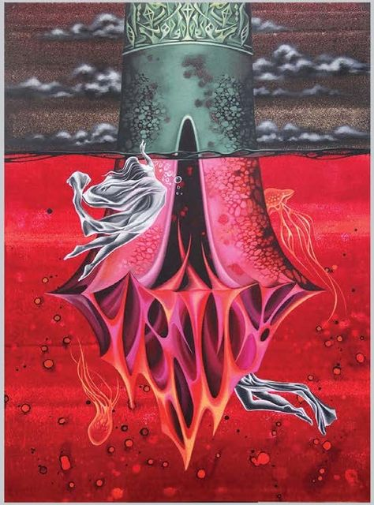

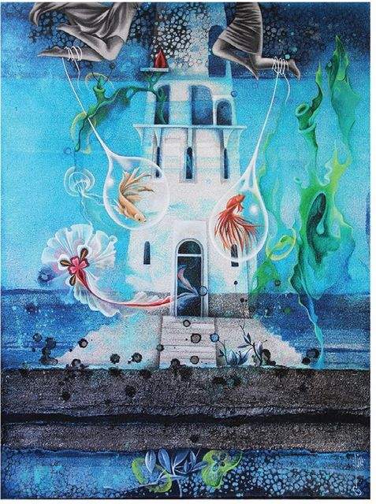
History of experienceBiography · education · exhibitions · awards
Education
- 1997M.A in painting from Al-Zahra University|Tehran – Iran
- 2002B.A in painting from University of Fine arts|Isfahan – Iran
Artistic carieer
- Member of society of Iranian painters (SIP)
Solo exhibitions
- 2013"Cross the boundaries", Hoor art gallery|Tehran – Iran
- 2009"Story of porches", Iranian artists forum|Tehran – Iran
Group exhibition
- 2016"looking to nature", Museum garden of Iranian arts|Tehran – Iran
- 2015"Cutting edge Artists", Mellat gallery, Pardis complex|Tehran – Iran
- 2015"Fish and coral in Persian gulf", The 2th annual exhibition of environmental painting, Niyavaran cultural center|Tehran – Iran
- 2014"The tree from root to color", Ordibehesht gallery|Tehran – Iran
- 2013"Maksar", Shokouh gallery|Tehran – Iran
- 2013"Female Painters", Iranian artist forum|Tehran – Iran
- 2013"Haft negah", Niyavaran cultural center|Tehran – Iran
- 2013"The Inner Leyers", Mellat art gallery|Tehran – Iran
- 2012"Effects of Fancy", Contemporary art museum|Isfahan – Iran
- 2012"Co-walker", Seyhoon art gallery|Tehran – Iran
- 2010"Spring on the Wall", Kabk gallery|Tehran – Iran
- 2010The 8th national painting biennial, Saba art center|Tehran – Iran
- 2010The 4th international Fajr visual art festival, Saba art center|Tehran – Iran
- 2008"Night", Iranian artist forum|Tehran – Iran
- 2006"Freedom; A conceptual art exhibition", Bahman festival hall|Tehran – Iran
- 2006The 4th international biennial of Islamic worlds, Saba art center|Tehran – Iran
- 2006The 3d experimental art festival, Tehran museum of contemporary art
- 2006International art expo|China
- 2003"Iran the land of peace", Niyavaran cultural complex|Tehran – Iran
- 2002Painting exhibition organized by "UNESCO"|Jordan
- 2000Aydin Dogan international cartoon competition|Turkey
Teaching carieer
- since 2014Lecturer at Islamic azad university of Tehran south branch|Tehran – Iran
- 2013–2014Lecturer at Islamic azad university of Tehran east branch|Tehran – Iran
- 2007–2012Lecturer and head of the graphic department at Allame Bahrololum University of arts|Tehran – Iran
- 2005Lecturer at Tehran university of applied science.
- 2002–2004Assistant professor of advance design at Al-Zahra university|Tehran – Iran
Symposiums
- 2015The 1st iza International painting symposium, Komarno|Slovakia
- 2013The 3th international painting symposium titled "Golden Garden"|Slovakia
- 2011The 1st international painting symposium titled "Golden Garden"|Slovakia
- 2010The 1st international painting symposium titled "From persepolice to persian gulf"|Gashm island – Iran
Awards
- 2010Winner of the Best Prize at the International Fajr Festival, Saba Art Center|Tehran – Iran
- 1989Winner of the First Prize at the Visual art Global Competitions of Iranian students|Tehran – Iran
- Special Award bestowed at the International Festival of "Dialog among civilization", Contemporary Art Museum|Isfahan – Iran
Source: the Sobhan Gallery artist catalogue “Shima Khashkhashi.pdf”.